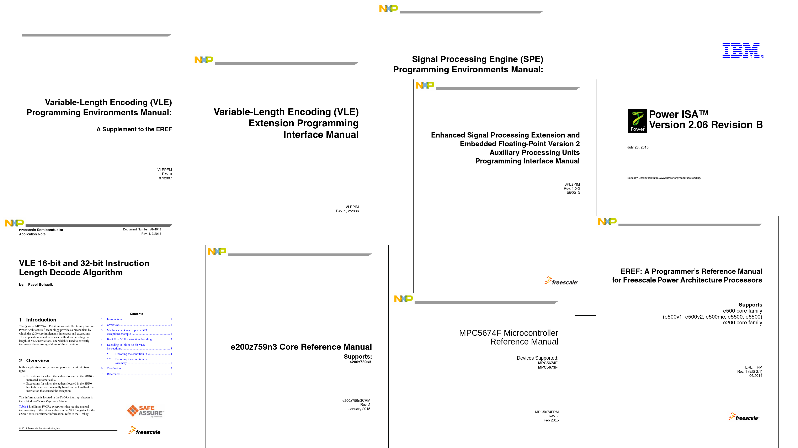
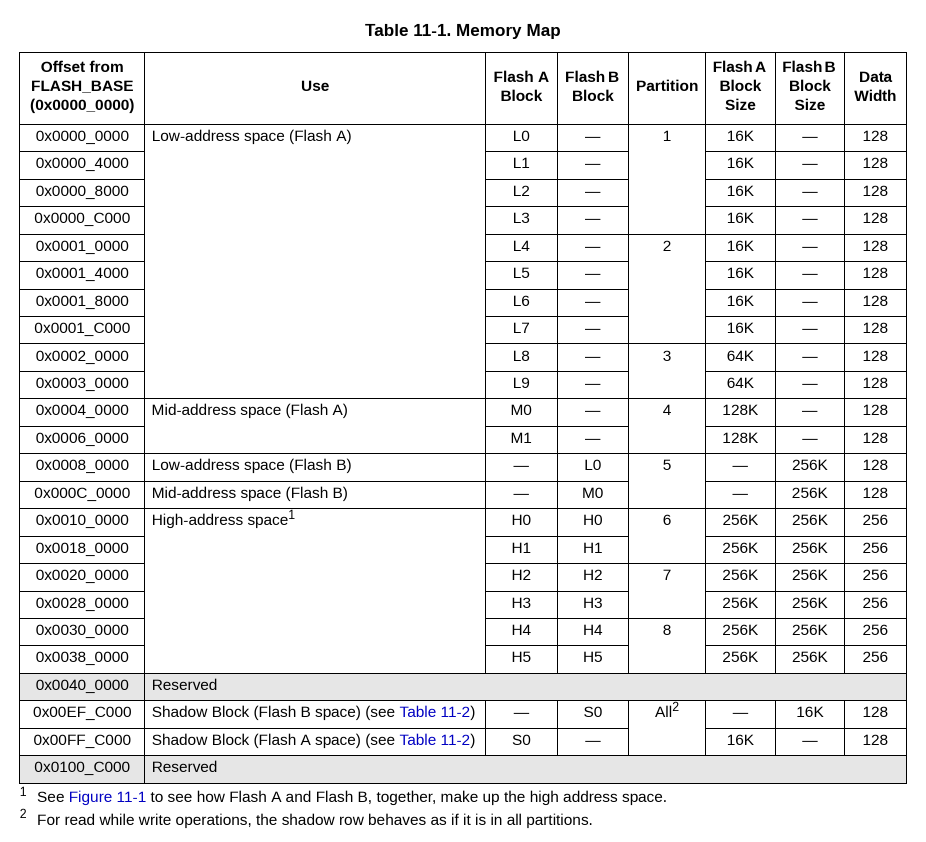

PowerPC, Emulation, and Transition
Who am I?
Erin Cornelius / ac0rn https://onionshark.comshe/her
If Someone Sounds Like They Know What They Are Talking About...
- They are full of shit
- They have been working with <thing> for 3+ years
- They created <thing>
Why Emulate Something?
- Bare metal systems are a PITA
- Full system emulation provides for additional analysis and information collection
- Allows for more targeted reverse engineering
- "It's useful"
Why A New Emulation Tool?
- QEMU is popular, but it's codebase is terrible (last I looked)
- Existing tools don't make me happy
- Because I want to
- Also it was my job for the DARPA AMP program
Why PowerPC?
- Popular in specific embedded controls
- Existing emulation tools are limited, no VLE support
- I was assigned to for the DARPA AMP program
AMP
-
https://www.darpa.mil/program/assured-micropatching
- Lift high level code from binaries
- Modify that lifted code
- Apply patch into binary
- Assurance
- Test those tools
MPC5674F
MPC5674F
Conway's Law
Any organization that designs a system will produce a design whose structure is a copy of the organization's communication structure
- Melvin E. Conway
How To Build An Emu
^H^H^H^H^H^H
A Gender
Winter 2014
Summer 2018
Started work on Vivisect PowerPC https://github.com/ehntoo/binaryninja-vle
Winter-Summer 2019
Project to improve Vivisect PowerPC support
January 2020
Summer 2020
DARPA AMP kicks off
Fall 2020
Bare metal emulator framework created
Late Fall 2020
I started working with Matt on the PowerPC emulator.
April 2021
Created the SWT Peripheral
May 2021
Created the SIU and FMPLL peripherals
May 2021
May 2021
May 2021
MMU and virtual memory addressing
June 2021
Flash
August 2021
Interrupt handling & PowerPC Exceptions
October 2021
CAN & External IO peripherals
November 2021
SPI
December 2021
ADC, EBI
Summer - Winter 2021
Integration & Testing on real AMP challenge
January 2022
Bare metal PPC firmware analysis in Vivisect
February 2022
March 2022

May 2022
June 2022
Placeholder
peripherals
DC30
Summer - Fall 2022
Floating Point Instructions
Summer - Fall 2022
Vector Instructions
November 2022
SIM
Fall 2022 - Winter 2023
DMA & Interrupts
March 2022 - 2023
Remote GDB server
April 2023
Accurate Timing
May 2023
External Watchdog
YOU ARE HERE
Phase 3
- Performance Improvements
- A few peripherals still using placeholders
- Improve ease of use
- Needs more documentation
- Abstract generic emulation framework
Conclusion
- Emulator framework that works well for me
- The emulator provides a bunch of hooks and features for additional analysis
- I've learned a great deal about disassembly, emulation
- Learned more about PowerPC than I really wanted to know
Don't be afraid to make your own tool
More Conclusions!
- I like being me for the first time in my life
- I enjoy life?
(Is this how life is supposed supposed to feel?)
It's never too late to be yourself
It's never too late to love yourself